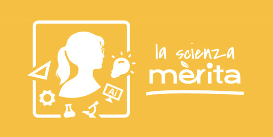
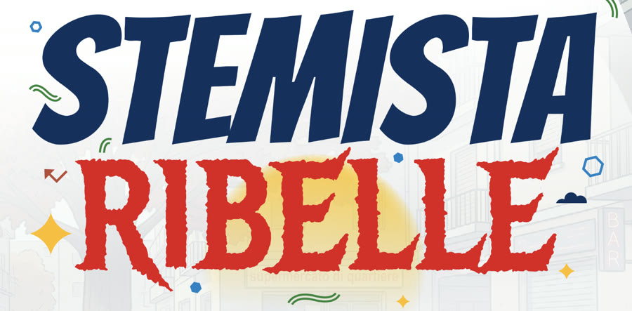
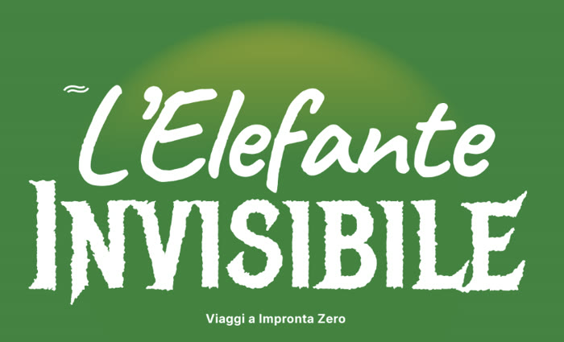
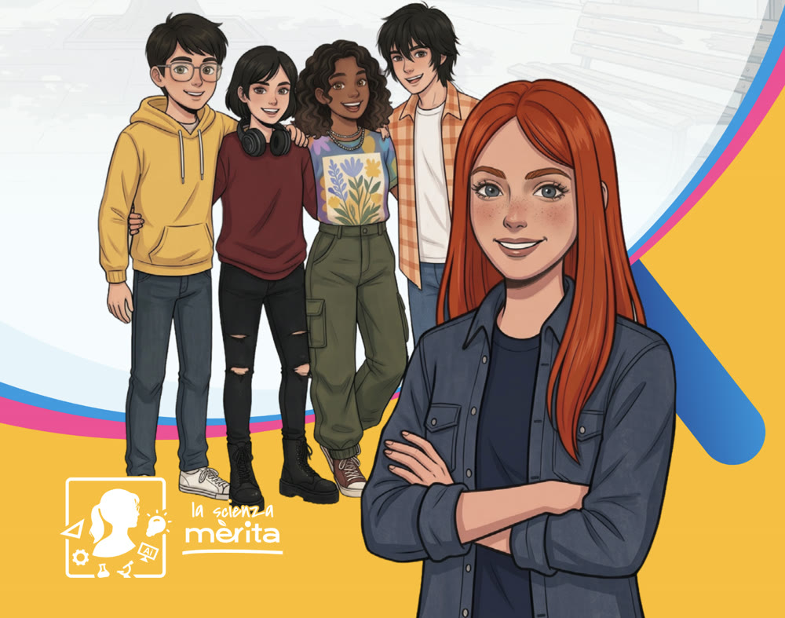

La Scienza Merita presenta
Un giorno
a scuola
Ogni mattina qualcuno ti porta a scuola. Quel viaggio lascia nell'aria una piccola nube di CO₂: piccola oggi, enorme se la moltiplichi per tutti i giorni di un anno.
- 1Scegli il mezzo: utilitaria, auto, SUV, autobus o bicicletta.
- 2Imposta la distanza da casa a scuola.
- 3Guarda quanta CO₂ esce davvero dallo scarico — e quanti alberi servirebbero per assorbirla.

Marta e i quattro studenti · Il gruppo di Stemista Ribelle